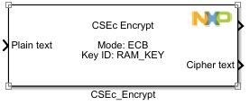
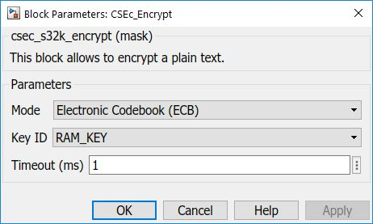

CSEc Encrypt Block
This block allows to encrypt a plain text.
Note:This is only available for S32K14x parts (no support for S32K11x).
The CSEc supports AES-128 encryption and decryption in ECB (Electronic Codebook) and CBC (Cipher Block Chaining) modes of operation. The key is selected from one of the memory slots which must be enabled for the encryption. For a key that is not stored in a non-volatile memory slot, a plain text key can be loaded into the RAM_KEY slot. However, as this method implies a potential security risk, this might only be useful for development or debug purposes. Data must be presented in 128-bit blocks. Any required padding must be done by the application.
Block Image
Inputs:
- Plain text (uint8_t*) - the length must be a multiple of 16.
- IV (uint8_t[16]) - initialization vector.
Outputs:
- Status (status_t)
- Cipher text (uint8_t*)
Parameters and Dialog Box
Mode
The AES encryption mode: Electronic Codebook (ECB) or Cipher Block Chaining (CBC).
Key ID
The key used for encryption: RAM key or one of the User Keys 1 to 17.
Timeout
Timeout in milliseconds as a 32 bits unsigned integer. In case the operation times out the returned status is STATUS_TIMEOUT.
Block Dependency
- None
Block Miscellaneous Details
- None